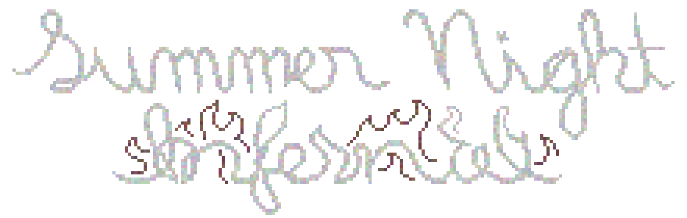

I had a routine for times I was anxious, times like this when I couldn’t bear one more second in the room I was in. Before I could think clearly, I had to retreat inward: take stock of my own body and feelings.
Inhale for five seconds, pause. Exhale for five seconds.
First, my heart was skittering in my chest like a motor. Okay, that's okay.
Inhale for five seconds, pause. Exhale for five seconds.
Onto the next visceral feelings that stood out to me. The sweat on my face, my shirt sticking to my back, the mosquito bites dotting my calves, my bra strap digging into my shoulders. Oppressive, constrictive heat.
Inhale for five seconds, pause. Exhale for five seconds. It wasn’t going to get any easier to face the source of my anxiety, sitting at her desk in the corner of the room.
Adorable as ever, Scarlett rested her head in her left hand as she scrolled on her phone. Her light brown hair, striped with faded blonde highlights, fell across her face. She had just washed off her makeup, and in the glow of the screen I could see shadows under her eyes. The way her cheek was propped up by her hand emphasized just how soft she looked. A cross necklace dangled by her collarbones, and an oversized pajama shirt reached down to her thighs. I wanted more than anything to hold her in my arms and feel every square inch of her body against mine. Fuck, why wasn’t she sweating?
Maybe I could’ve gotten away with walking over and cuddling her. On the other hand, it would be wrong if she didn’t know exactly what my intentions were. For her part, it wasn’t at all clear what she had meant by inviting me here - especially only having known her a few days. The cross on her neck was not a good sign. I scanned the rest of her studio apartment, mostly dark with one lamp on in the corner and a square of harsh light falling where a wall met the floor. Maybe she had a pride flag, or one of the posters revealed something about her…
“Chloe, could you do me a favor?” she murmured in a sleepy voice. She seemed not to look up from her phone, but I couldn’t bring myself to glance at her and check.
“What?”
“Could you water the monstera for me?”
“This one on the bookshelf?”
“Yeah.”
Stupid question. There was only one plant in the room. “Um, do you have a glass I could use?”
This time, I caught her gaze for a split second. Something reacted in my heart, like twine suddenly pulling tight around it.
“Just bring it into the bathroom and run the faucet over it for a couple seconds,” she ordered with a smile. “Thanks.”
It was a relief to get an easy opportunity to make myself useful. I even had a chance to wipe the sweat from my face without her seeing.
Still, it must have been painfully obvious just how nervous I was, right? She had to have seen me fidgeting with the tablecloth at the pizza place, or how gleeful I was to rant to her about my psychology textbooks, or how desperate I tried to help her and make her happy. Was she just as averse to bringing it up? Why did it feel so terrifying to spell it out to her?
I had to go back into her peripheral vision and put the plant back. Everything in my body told me to leave, to find an excuse to get out of her room and go back home. It could all be over so fast: the sweltering heat, the overthinking of every little movement, the tension before it inevitably comes crashing down. I could just go home.
The problem then would be forgiving myself for never finding out how this played out. Leaving now would mean that every night I had to spend on my own, every couple that walked past holding hands, and every home-cooked meal that I couldn’t share would take me back to this very moment in Scarlett’s apartment. It would add a barb to the pain: not only are you alone, but it’s all your fault.
The words didn’t matter. I just needed her to know how I felt. I began to speak.
There was a knock on the door. Thank god.
“Scarlett, you in there?” said a man outside, maybe in his late twenties. “I got something for you!”
“Brian!” she exclaimed, and jumped up to get the door. Her sudden surge of energy caught me off guard. Brian stood in the hallway, a tall man in grey sweatpants and a plain white shirt. He held a tupperware of brownies.
“Aww, you’re the best!” Scarlett wrapped her arms around his neck and pressed her head to his shoulder. “This is my friend Chloe.”
I smiled and waved. Something in Brian’s expression dropped, like he saw a scratch on his new car.
“Hey Chloe,” he said. “I live next door, I bring Scarlett a little something every time I bake.”
“He’s such a good cook,” Scarlett flashed her heart-melting smile and brought the tupperware to me, offering a piece. “Thank you Brian!”
“Of course, have a nice night,” he said as he gently shut the door.
Scarlett dropped her voice to a murmur again after he left. “Good, right?”
“Scarlett, I have something to tell you.”
“What’s up?” she said, munching a bite of brownie. She was either oblivious or pretending to be. The bedroom felt like a furnace.
“I uh,” I searched my mind for a way in, a way I could put it that didn’t feel so heavy. Slowly, carefully, I ordered the words in my head, one at a time. “I really like you. You’ve been a great friend today, but… I don’t want to just be friends.”
Scarlett had to finish chewing. I couldn’t read her expression. The twine was suffocating my heart now. Blistering, mind-numbing heat. I thought I might throw up. Scarlett swallowed and looked at me. I fixed my gaze on the floor.
Fuck, please just say something.
“I really appreciate that you trusted me enough to open up,” she said with an unmistakable note of pity. That’s all I needed to hear.
“I’m so sorry, oh my god I picked up the wrong signals, I am so goddamn sorry,” I blurted out as I stood up. “I can leave right now, I won’t bother you again. Promise.”
“No no no, wait,” she frantically protested. I stood at the door, unable to even face her direction.
“We can talk, okay? I know how difficult that was for you. Please sit back down.”
I reluctantly took a seat on her bed as she took my hand, not quite managing to hide her cringing at how sweaty my palm was.
“Uh, I had a really great time with you today. You’re smart, you’re empathetic, you’re… I don’t swing that way, but I’m not mad at you, okay?”
“Yes, I know.” In reality, I wasn’t so sure. Looking at myself at this moment, I only felt disgust. On top of misjudging Scarlett and putting her in a painfully awkward situation, she now had to be the one to tell me that it would be ok. "You really don't have to do this," I asserted.
“This is important.” She was as hard to look at as ever. "I have something to tell you too, and I wasn’t sure how to say it. I thought you might be different, I thought maybe you could help me.”
“Help you how?”
“Um… it’s not your fault. Something weird is going on.” Her voice sped up, laden with a frustration that had clearly been stewing for some time. “This keeps happening every single day. Every day, I have to be a bearer of bad news. I always upset someone even worse than the day before. At some point, I started to feel like I was cursed.” She reached up and held the cross on her necklace in her palm. “And the more time I spend with someone, something builds up in them. Jealousy, or bitterness or, I guess, in your case...”
“Really, I just misread you.”
Her face hardened at that. “You’re a straight-A psychology student! Your whole job is learning about, reading, and defining feelings. It’s me that’s the constant in every one of these situations. Do not blame yourself.” Scarlett stood up and looked out on the street. “You don’t understand. If I say it bluntly, it hurts them. If I try to soften the blow, it hurts them even more. It’s like every decision leads to ruining someone’s mood. Every single day. I even tried to shut myself in and not talk to anyone, but that means it has to be one of my friends or family to take the blow over text.”
It was a lot to take in, but I believed her. The happy, bubbly personality she had showed me today was a performance that was slowly slipping more and more as she watched how people reacted to her.
“How long has this been going on?”
“All summer. Something happened the day I played mini-golf with my boyfriend in June, something that had never happened before. Just after he was talking about his work practicing his putt, I was beating him. I even taunted him and rubbed it in because I thought he could handle it. That day, he couldn’t. He broke up with me the very next day. And what about my parents? Are they going to be my next victims? You need to help, I can’t do this every day. I’m running out of people that care about me. You seem so good with people, with managing their emotions. Can you please tell me what’s going on?”
“Well uh, I need to be honest. It’s going to be kind of difficult to hang out with you after what happened tonight. I- you said the reactions just get worse and worse?”
She only nodded, and I noticed her fighting back tears. Again, I felt the overwhelming urge to hold her close to me, followed by a stab of guilt.
“So if I don’t help you now, then you think tomorrow someone will feel worse than I do, and so on?” I rubbed the bridge of my nose. “I’ve read about one case like this, a long time ago. I’ll have to see a couple more instances, maybe where the subject isn’t me… ok, I’ll see this through. We’re going to figure this out. And you already hurt me, so maybe it won’t come around to me again.”
Her voice was cracking. “It could’ve been worse, huh? I was so scared to tell you before, I thought you were going to leave me. Thank you for being so strong. I just want to stop making everyone around me so anxious or sad or disappointed or… broken-hearted. It's hell trying to build friendships constantly knowing that the hammer could drop at any minute.”
"How about this, tomorrow let's go out again. As friends. We'll stay in each other's line of sight, just far enough that we'll look like strangers. If anyone has a reaction to you, I'll talk to them, try to make them feel better, throw a fake insult your way if I think it'll help. Maybe, them walking away in a better mood could help you feel a little better too."
Scarlett smiled, a different smile than I'd ever seen her wear before. This one was all in her cheekbones, while her lips barely curled. "It's after midnight now. I already got one with you just now, so I'm safe for all of tomorrow." The full weight of her gaze was on me now. "Can we still go out? As friends?"